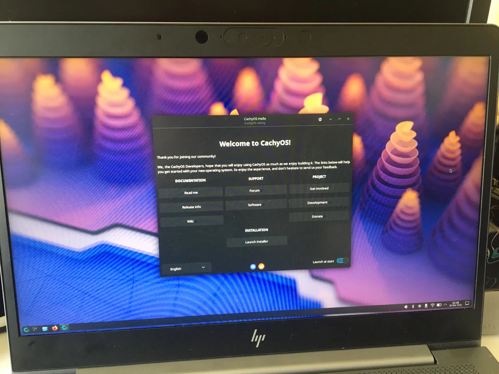
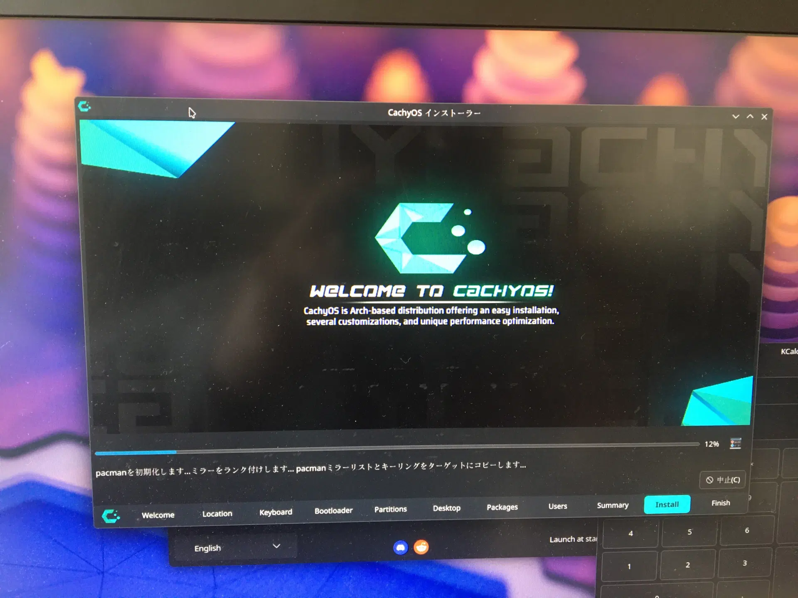
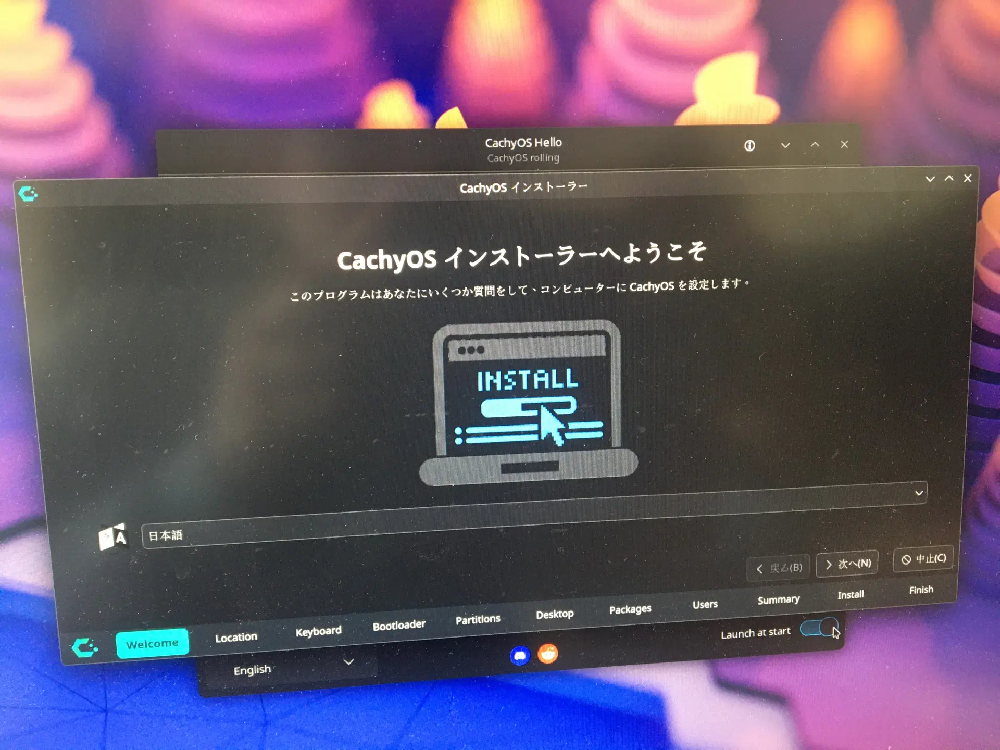
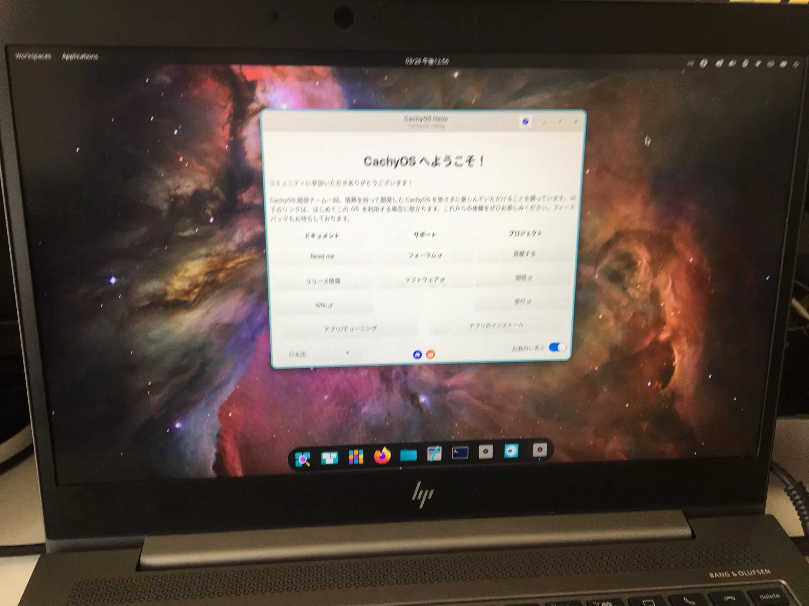
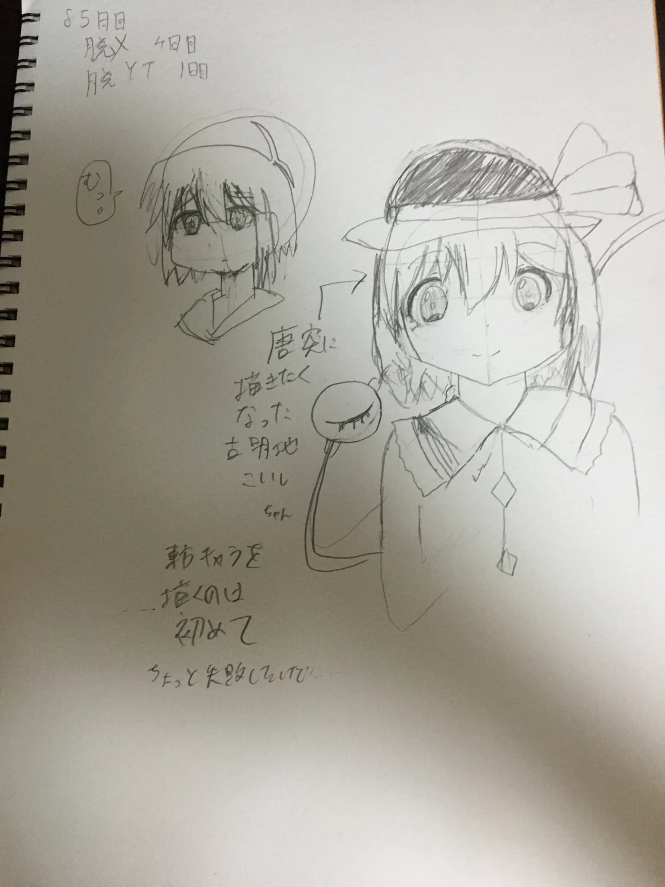
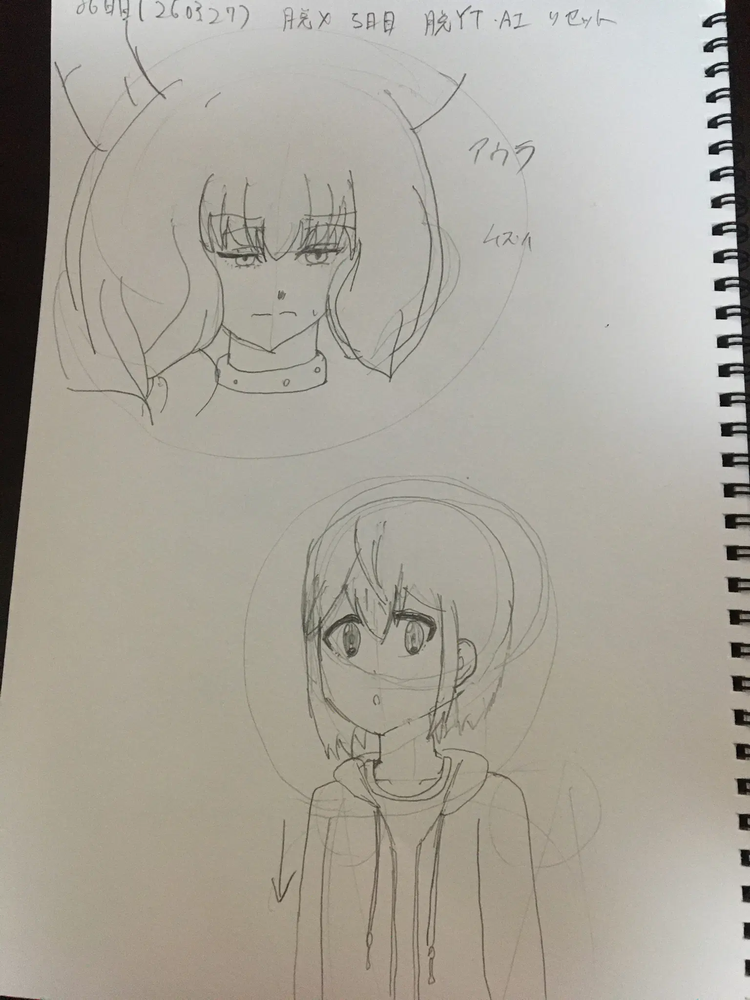

ノートPCにCachyOSを入れた。
記事の題名通り、それだけ。




最初はHyperlandを試してみましたが、操作が難しそうだったので、別のデスクトップ環境に…
脱〇〇のコーナー Link to heading
- 脱X 6日目
- 脱YouTube 1日目
- 脱AI 1日目
勉強のコーナー Link to heading
英単語と数学の映像授業だけ。
お絵描きのコーナー Link to heading
85日目。こいしが唐突に描きたくなっただけ。

86日目。葬送のフリーレンからアウラ。

しばらく大きく描く練習のために大きい絵を1つか2つ程度描いてましたが、そろそろ数をこなす方に戻そうかなと…